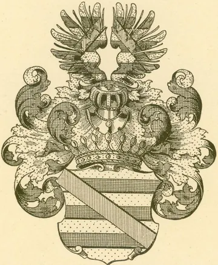

Цифровий архів · Рівненщина · Полісся
Найдавніше місто Рівненщини, вперше згадане 1005 року. Тут зібрано тисячу років його історії: документи, мапи, газети й світлини. Знайдіть своє прізвище чи село — і побачите всі джерела, де вони згадуються.
Наприклад:
Потягніть, щоб обернути
Вхід в архів через час
Оберіть добу — і побачите, які документи, мапи, газети й світлини про неї є на сайті.
1005 — 1240
Перша писемна згадка — 1005 рік: Дубровицю названо серед міст новозаснованої Турівської єпархії. У XII столітті тут сидять власні удільні князі. Князівство закінчується з монгольською навалою 1240 року.
1240 — 1569
У XIV столітті Погорина відходить до Великого князівства Литовського, і Дубровицею правлять намісники. Згодом нею володіють князі Гольшанські-Дубровицькі: 1537 року князь Юрій у заповіті називає три міські церкви.
1569 — 1793
Приватне містечко магнатів: Курбського, Дольських, з 1770-х — Плятерів. Хмельниччина й Руїна спустошують маєток, а наприкінці XVII століття піари будують костел і колегіум.
1793 — 1914
Після поділів Польщі — Рівненський повіт Волинської губернії. Маєток і ліси лишаються за Плятерами, які живуть у Воробині. Місто описано вулиця за вулицею, а 1861 року зводять муровану церкву.
1914 — 1921
Фронт за тридцять кілометрів, штаб армії в маєтку Плятерів. Потім влада змінюється понад десять разів за чотири роки, а в листопаді 1918-го селяни беруть Воробин.
1921 — 1939
Ґміна Домбровиця Сарненського повіту. Містечко з ринком, крамницями й п'ятьма синагогами, польські військові осадники, яким держава роздала землю після 1919 року.
1939 — 1944
У вересні 1939 року приходить радянська влада, у 1941-му — німецька окупація. У серпні 1942 року знищено єврейську громаду міста. У січні 1944-го фронт проходить через Дубровицю.
1944 — 1991
Райцентр. Костел стає складом, церкву 1962 року закривають під склад солі. Місто перебудовують, а районна газета пише про повстання 1918 року ювілейною мовою.
1991 — сьогодні
Храми повертають громадам: костел освячено вдруге 1992 року. Із 2020-го Дубровиця — центр міської громади Сарненського району.
Дубровиця й навколишні села наприкінці XVIII століття: хто ними володів, скільки було дворів і душ, де стояли церкви, млини й пристані на Горині. Чотири аркуші мапи, опис кожного поселення і зведення всіх маєтків.

Власник Дубровиці з 1775 року: біографія, родина, герб і маєток за описом 1798 року.
ЧитатиДе жила шляхта, духовенство й кріпаки, портрети 16 маєтків, млини, храми, звірі й риба — у діаграмах.
ДивитисяОригінальні архівні справи XVII–XVIII ст. — з транскрипцією, перекладом та коментарями
11 586 злотих річного доходу: залізні рудні, 20 озер, поташня, замок. Детальний опис маєтку.
Воєнна документація часів Хмельниччини. Маніфестація Миколая Березецького у гродському суді Пінська.
«Чорна книга» свавілля пана Борка: тортури, вигадані провини, понад 80 постраждалих. 14+ сіл.
200+ сторінок, 1780–1820. Детальний інвентар маєтку: будівлі, землі, мешканці, господарство.
Завантаження...